[1] Analyse
Im Rahmen der Grundlagen zu User Interface (UI) und Interaction Design (IxD) sollen theoretische und praktische Aspekte wie Usability, User Centered Design sowie Begriffe wie Informationsarchitektur, Layout, Typografie etc. behandelt werden.
Als zentrale Übung dient die Analyse und einfache Skizze (Scribble) der Struktur und Inhalte der Website des Schwäbischen Albvereins.
Dabei sollen Aufbau, Elemente und Gestaltung verständlich beschrieben und benannt werden.
Die Ergebnisse dieser Analyse wurden in einer Präsentation zusammengefasst, die hier angeschaut oder heruntergeladen werden kann.
PDF Dokument
[2] Grundelemente: Kompositions-und Strukturübungen
Bei dieser Aufgabe soll man einfache grafische Elemente wie Punkte, Kreise oder Quadrate verwenden, um bestimmte Begriffspaare (z. B. groß – klein, geordnet – ungeordnet) als Skizzen darzustellen.
Wichtig ist dabei eine abstrakte Darstellung, also keine Bilder oder Symbole. Es soll erforscht werden, wie man durch Größe, Anzahl, Anordnung und Position eine bestimmte Wirkung oder Aussage erzeugen kann – zum Beispiel Tiefe, Ordnung oder Spannung.
GROß UND KLEIN


Hier zeigt sich dass man durch die Größe von Objekten auch eine gewisse Tiefe angeben kann.
OBEN UNTEN


Die vertikale Positionierung erzeugt eine visuelle Hierarchie und kann Assoziationen wie Leichtigkeit (oben) oder Schwere (unten) vermitteln.
NAH UND FERN


Durch unterschiedliche Abstände zum Bildrand oder zur Bildmitte lässt sich Nähe oder Distanz simulieren – ein einfaches Mittel zur Darstellung von Raum.
STABIL UND INSTABIL


Symmetrische oder mittig platzierte Formen wirken standhaft, während schräge oder ungleich verteilte Elemente Unsicherheit und Bewegung erzeugen.
STREUUNG


Viele gleichartige Elemente, die scheinbar zufällig im Raum verteilt sind, vermitteln den Eindruck von Weite, Offenheit oder gar Chaos.
GRUPPE


Durch Nähe und Gleichheit entsteht der Eindruck von Zusammengehörigkeit – das Auge fasst ähnliche oder nahe beieinanderliegende Elemente automatisch zur Gruppe.
GEORDNET UND UNGEORDNET


Eine regelmäßige Anordnung vermittelt Struktur und Ruhe, während eine freie Streuung Dynamik und Zufälligkeit ausdrückt.
STRUCKTUR


Wiederholungen, Rastern und klare Anordnungen erzeugen eine lesbare Ordnung, die Orientierung und Systematik vermittelt.
SYMMETRIE


Spiegelungen oder Achsen erzeugen ein Gleichgewicht im Bild, das Harmonie, Stabilität und Ruhe ausstrahlt.
AUSGRENZUNG


Ein einzelnes, isoliertes Element hebt sich klar von einer Gruppe ab und erzeugt so ein Gefühl von Trennung oder Ausgeschlossensein.
Vom Punkt zur Linie zur Fläche
Bei dieser Aufgabe werden Linien als grundlegendes Gestaltungsmittel in ihrer Wirkung auf einer quadratischen Fläche untersucht.
Durch verschiedene Anordnungen – von einer einzelnen Linie bis hin zu mehreren parallelen Linien – entsteht eine erste Auseinandersetzung mit Struktur und Rhythmus.
Anschließend werden Variationen in Stärke, Länge und Linienführung (gerade, gebogen, geknickt) erprobt, um die Ausdrucksmöglichkeiten der Linie weiter zu erforschen.
Ziel ist es, ein Gefühl für das Zusammenspiel von Form und Wirkung zu entwickeln.
Teilaufgabe 1


Eine einzelne Linie innerhalb der Fläche lenkt gezielt den Blick und kann je nach Position eine Richtung oder Spannung erzeugen.


Gleich lange, parallele Linien erzeugen Ruhe und Stabilität – sie strukturieren die Fläche und können als Rahmen oder Grenze wirken.


Unterschiedlich lange Linien brechen die Symmetrie und bringen eine leichte Unruhe oder Bewegung in die Komposition.


Viele parallele Linien bilden ein Raster, das Ordnung und Rhythmus schafft – die Fläche wirkt klar gegliedert und technisch.
Teilaufgabe 2


Eine einzelne Linie innerhalb der Fläche lenkt gezielt den Blick und kann je nach Position eine Richtung oder Spannung erzeugen.


Gleich lange, parallele Linien erzeugen Ruhe und Stabilität – sie strukturieren die Fläche und können als Rahmen oder Grenze wirken.


Unterschiedlich lange Linien brechen die Symmetrie und bringen eine leichte Unruhe oder Bewegung in die Komposition.


Viele parallele Linien bilden ein Raster, das Ordnung und Rhythmus schafft – die Fläche wirkt klar gegliedert und technisch.
[4] Basiskurs Typografie | Grundlagen
1. Schriftarten
Bei dieser Aufgabe geht es darum, unvollständige Buchstaben in vorgegebenen Schriftarten zu vervollständigen.
Dabei sollen Form, Stil und Gestaltungsprinzipien der jeweiligen Schrift genau beobachtet und übernommen werden.
Zusätzlich wurden die Schriftarten analysiert, ihre typischen Merkmale beschrieben und Informationen zum Schriftgestalter recherchiert.
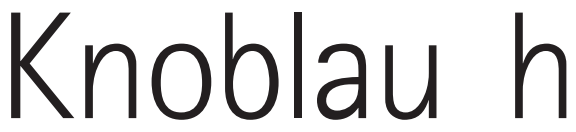
Bei der Schriftart der Knoblauch geschrieben wurde handelt es sich laut What the font um eine Schriftart aus der Rotis Familie.
Die Schriftart stammt aus der Monotype Library. Diese Schriftart wurde 1988 von dem deutschen Typografen Otl Aicher entworfen.
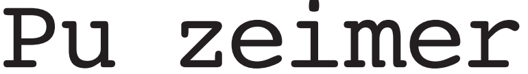
Bei der Schriftart der Putzeimer geschrieben wurde handelt es sich laut What the font um eine Schriftart aus der Courier Familie.
Die Schriftart stammt aus der Scangraphic Digital Type Collection. Diese Schriftart wurde 1955 von Bud Kettler entworfen.
Aktuell scheint die Schriftart aber zu Bitstream zu gehören.
2. Buchstaben als Zeichen. Marke aus Schriftzeichen
Buchstaben dienen nicht nur dem Schreiben von Texten, sondern können auch als eigenständige Gestaltungselemente in Zeichen und Logos eingesetzt werden.
In dieser Aufgabe wird untersucht, wie typografische Formen zur Entwicklung markanter Signets genutzt werden können.


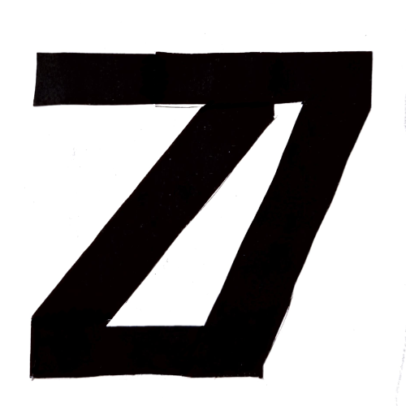
3. Sinn durch Form
In dieser Aufgabe soll die Bedeutung einzelner Begriffe wie Schneiden, Ordnen oder Stapeln durch typografische Gestaltung sichtbar gemacht werden.

4. Sinn durch Bewegung
In dieser Aufgabe wird eine Animationssequenz zum Thema Bewegung konzipiert.
Der Titel „Bewegung“ soll dabei eine sichtbare Entwicklung durchlaufen und verschiedene Bewegungsarten darstellen.


[5] Farbe
1. Farbverlauf Farbton
Diese Aufgabe erfordert die Gestaltung von Farbverläufen mithilfe von quadratischen Farbflächen.
Dabei werden für jede der drei Kategorien mindestens zwei Verläufe erstellt, die jeweils aus sieben Schritten bestehen
1.1 Farbton
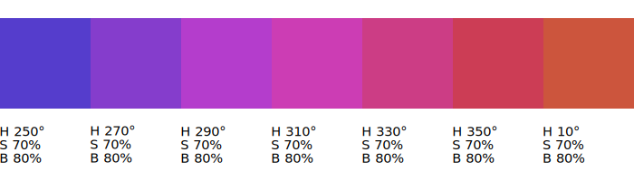
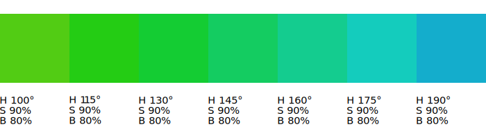
1.2 Sättigung
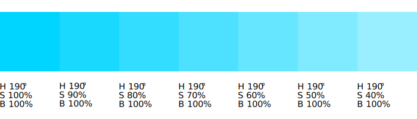
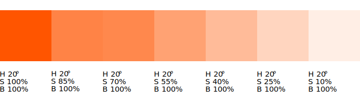
1.3 Sättigung
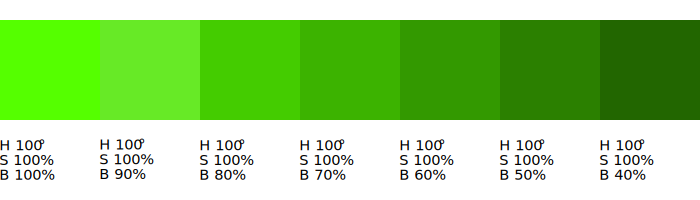
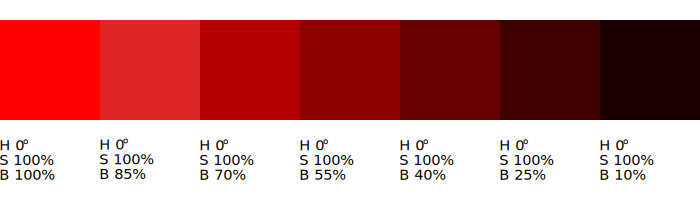
2. Farbkontraste
Diese Aufgabe erfordert die Gestaltung von Farbverläufen mithilfe von quadratischen Farbflächen.
Dabei werden für jede der drei Kategorien mindestens zwei Verläufe erstellt, die jeweils aus sieben Schritten bestehen
2. Farbverlauf / Farbklima
Diese Aufgabe erfordert die Gestaltung von Farbverläufen mithilfe von quadratischen Farbflächen.
Dabei werden für jede der drei Kategorien mindestens zwei Verläufe erstellt, die jeweils aus sieben Schritten bestehen
[6] Informationsarchitektur und Navigationsstruktur
[7] Wireframe & Mock-Up
[7] Einführung HTML & CSS
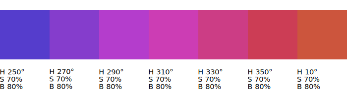
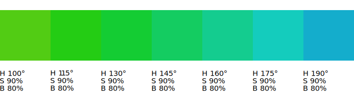
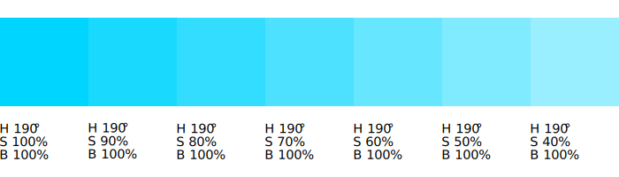
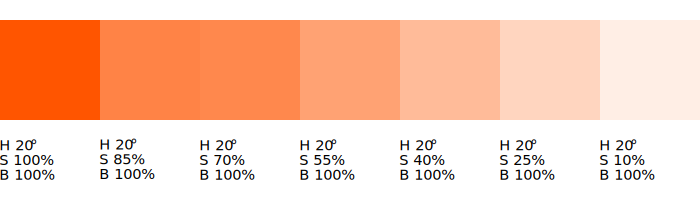
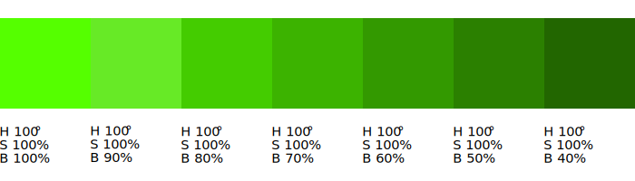
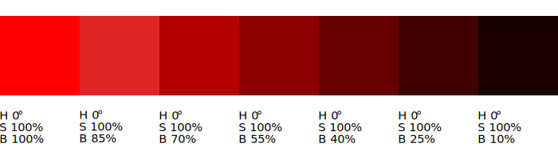